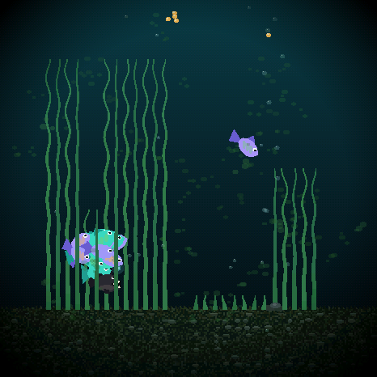
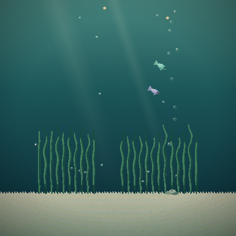
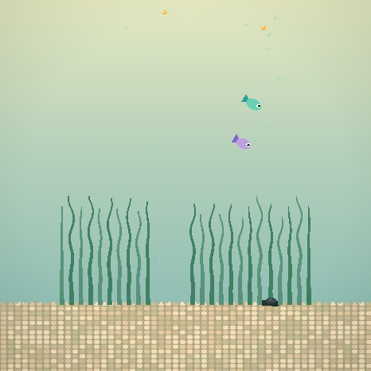
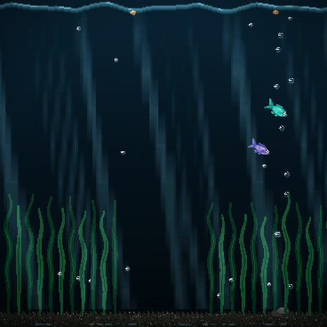

A new mood for
your little world.
New creature designs, living habitats and little moments of surprise. Install with one USB cable, keep your fish, and choose your atmosphere.




Bring the update aboard.
Choose the screen on your device. Each board needs its own firmware.
- Connect your device to this computer or phone. Use a USB-C data cable (on an Android phone, a USB-C to USB-C cable or an OTG adapter). Wake it with PWR if the screen is asleep.
- Click Install update. Choose
USB JTAG/serial debug unit(orttyACM0on Linux). On Android, Chrome asks for permission to use the USB device; allow it. - Leave it connected until complete. The installer writes approximately {{TOTAL_MB}} MB, then restarts your aquarium.
Checking browser support…
Select your device above to enable installation.
Your saved tank stays. The update button does not erase your fish, names, progress or settings. A blank device starts a new aquarium.